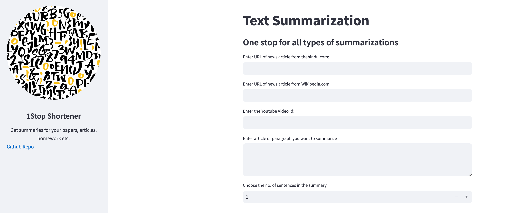
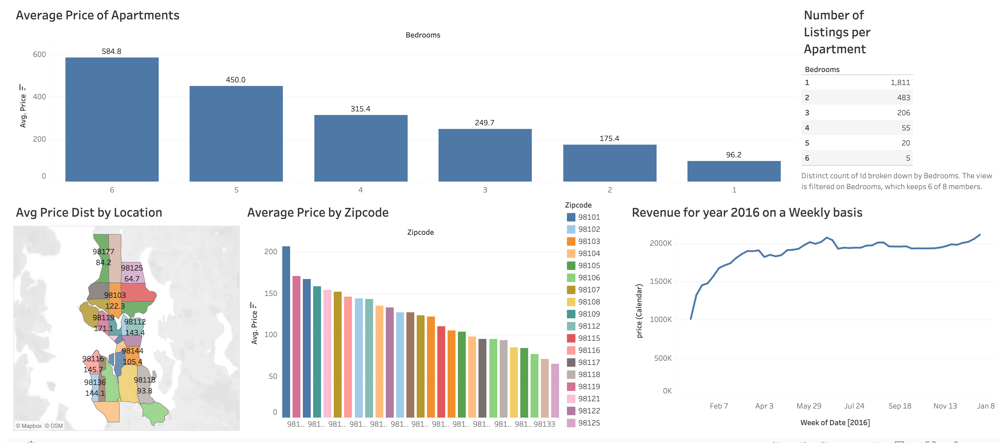
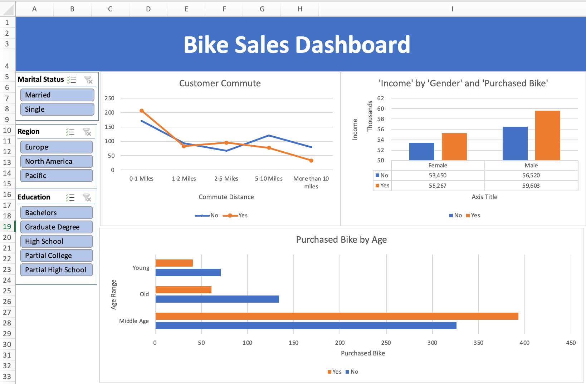

Exploring Public Sentiment: Analyzed posts to visualize public perceptions of various language models.
Ingested data from Reddit and hackernews relevant to various language models, computed the sentiment for each post and used Plotly for interactive data visualization.

Cleaned and transformed raw housing data using SQL to make it useful for gathering insights.

Created an application to summarise:
Hindu News Article,
Wikipedia Articles,
Simple Text Paragraphs and
Youtube Videos(with transcripts).
Utilised SQL Server to explore global COVID 19 data for the year 2020-21.

Utlized Tableau to visually delve into the trends, pricing patterns, customer preferences and geographical distributions for the Airbnb data facilitating data-driven decision-making.

Created a Dashboard in Excel to visualize the bike sales based on potential attributes.

Performed exploratory data analysis and streamlined data ingestion from different data sources and analyzed data in SQL and NoSQL databases with Python.